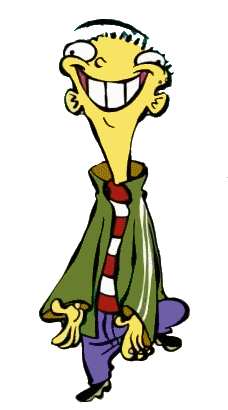

El juicio moral es la capacidad de una persona para analizar y valorar una acción, decisión o conducta como correcta o incorrecta, teniendo en cuenta valores, principios, intenciones, consecuencias y circunstancias. Para Lawrence Kohlberg, es un proceso cognitivo mediante el cual reflexionamos sobre nuestros valores y los organizamos para tomar decisiones.

El psicólogo Lawrence Kohlberg, basándose en los trabajos de Jean Piaget, propuso tres niveles de desarrollo moral, cada uno dividido en dos etapas:
Si una persona encuentra una cartera con dinero:
Kohlberg utilizó dilemas morales, como el famoso dilema de Heinz, para estudiar no solo qué decisión tomaba una persona, sino también las razones que utilizaba para justificarla.